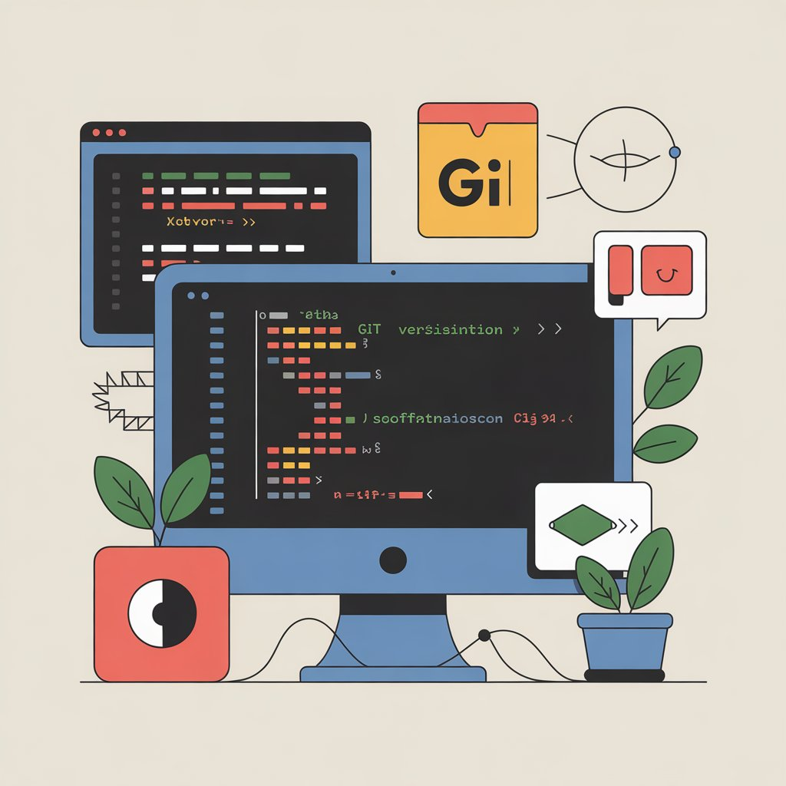

An in-depth guide to Git’s object model, branching mechanics, and the hidden workflows that make it so powerful
SWE
Author
Imad Dabbura
Published
December 22, 2023
Modified
December 22, 2023

Introduction
Git is a distributed version control system that thinks/stores its data as a series of snapshots (not delta). Each commit is a snapshot for the state of the system at the time of the commit. For files that haven’t changed, Git doesn’t store the file again but uses a pointer to the previous identical file that it stored before. It also lets us do almost all operations locally.
Everything in Git is checksummed before it is stored in its object store using SHA-1 hash. SHA-1 hash returns 40 hexadecimal characters. All objects are referred to by their checksummed because Git is content addressable filesystem. This means that Git notice any changes to the files it tracks by comparing the checksummed of the stored version vs the current version.
All actions in Git only add data to the object store (Git database). Therefore, it is almost impossible to not undo any operation especially if we regularly push our Git database to other repository such as Github.
Git has three states:
Modified: file changed but not yet committed.
Staged: marked changed file to go to next commit snapshot. Staging area is a single file that is typically called “index”, which stores information about what will go into our next commit snapshot. When we run git add file, Git does the following:
Computes checksum of the file and store the SHA-1 value in index file
Compress the contents of the file and store it in .git directory under objects where the first two characters of the checkum would be the name of the directory and the next 38 characters would be the name of the file
Add the checksum to the index file (staging area)
Committed: store data (snapshot) in the database. The snapshot is represented as tree for root directory of the Git project. When we run git commit, Git does the following:
It computes checksum of each subdirectory until we end up with the root directory.
Stores them as tree objects in Git repository
Finally, Git create a commit object and store it in the Git repository with the following metadata:
Date
Author name
Committer name
Commit message
Parent(s) commit. First commit would have no parents. Following commits may have 1 parent or more parents in the case of merges
Pointer to the root project tree
.git directory which is at the root directory of the project has all the metadata for Git project such as the database (object store).
Files can be in two states:
UnTracked: files that Git doesn’t know about. They are files that are neither in any snapshot nor in staging area. Therefore, they don’t have modified/unmodified states.
Tracked: files that were in last snapshot or in staging area. They have all states mentioned above.
Git Object Model
Git stores everything in .git directory. So deleting this directory will basically delete the whole history and can’t be recovered.
Git stores all of its representations using objects directory. Object can be: blob or tree or commit.
Git use sha1sum to get the hash value of each object. It is 40 hexadecimal characters (160 bits).
Git uses the first two characters for the name of directory for the object and the other 38 characters for the object itself.
Git stores objects based on their hash values (content addressable storage).
Git compresses the contents using zlib
// a file is a bunch of bytestype object = blob | tree | commitobjects = map<sha1sum(object), object>
def store(obj):id= sha1sum(obj) objects[id] = objreturn// a directory contains named files and directoriestype tree =map<string, tree |file>def load(id):return objects[id]
!ls -al ../../.git
total 48
drwxr-xr-x 15 imad staff 480 Nov 5 09:08 .
drwxr-xr-x@ 12 imad staff 384 Nov 5 06:56 ..
-rw-r--r-- 1 imad staff 15 Mar 17 2020 COMMIT_EDITMSG
-rw-r--r-- 1 imad staff 23 Feb 12 2020 HEAD
drwxr-xr-x 2 imad staff 64 Feb 12 2020 branches
-rw-r--r-- 1 imad staff 455 Mar 17 2020 config
-rw-r--r-- 1 imad staff 73 Feb 12 2020 description
drwxr-xr-x 13 imad staff 416 Feb 12 2020 hooks
-rw-r--r-- 1 imad staff 3913 Nov 5 09:08 index
drwxr-xr-x 3 imad staff 96 Feb 12 2020 info
drwxr-xr-x 4 imad staff 128 Feb 12 2020 logs
drwxr-xr-x 3 imad staff 96 Mar 17 2020 modules
drwxr-xr-x 94 imad staff 3008 Mar 17 2020 objects
-rw-r--r-- 1 imad staff 114 Feb 12 2020 packed-refs
drwxr-xr-x 5 imad staff 160 Feb 12 2020 refs
!ls -a ../../.git/objects
. 0c 1a 26 37 43 50 62 72 8b 9e b1 c5 d1 e0 fc
.. 0f 1d 29 38 45 52 63 73 8e a2 b2 c7 d2 e1 ff
00 12 1f 2a 39 49 58 64 75 91 a5 b3 ca d3 eb info
03 13 20 2b 3f 4a 5a 67 77 96 a9 b4 cc d8 ee pack
07 17 21 2c 40 4b 5f 68 7f 98 aa b6 ce dc f0
08 19 22 33 42 4d 61 6f 8a 9d b0 b8 d0 dd f8
!ls -Ral ../../.git/objects/ee
total 8
drwxr-xr-x 3 imad staff 96 Mar 4 2020 .
drwxr-xr-x 94 imad staff 3008 Mar 17 2020 ..
-r--r--r-- 1 imad staff 166 Mar 4 2020 5941ab3c125a3a669370d96cd5cb8496f8acde
blobs are binary large objects which stores only the context of the file; not its name (array of bytes).
type blob = array<byte>
The type of file which is “blob”, the number of characters in it, the separator character, and the actual content are passed to the sha1sum to get the hash value.
Since Git does not store the name of the file or any of its metadata, if you have two files with the same content then Git only stores it once.
# software-engineering
Materials for software engineering.
!wc ../../README.md
2 6 59 ../../README.md
%%bashcat <(echo -e "blob 60\0") ../../README.md
blob 60
# software-engineering
Materials for software engineering.
# # Since todo.md and todo2.md are identical, Git saves ONLY one copy# 100644 blob b3dfa8b0b7c73f2c7156dfc69c737d05f2f900c3 file.txt# 100644 blob c1ee9d5404109b66f21fa193da635aa8c4f04c47 todo.md# 100644 blob c1ee9d5404109b66f21fa193da635aa8c4f04c47 todo2.md
Tree is a recursive data structure that contains other trees/blobs; i.e. it contains a list of pointers to other trees/blobs. In this context, tree is a directory. Therefore, the root directory is the main directory that has .git as its subdirectory. Each line in the tree object’s file contains a pointer (the object’s hash) to one such object (tree or blob), while also providing the mode, object type, and a name for the file or directory.
// a directory contains named files and directoriestype tree = map<sha1sum(tree | file), tree | file>;
It maps strings (hash values) to objects. So if a directory is empty, Git does not add it as untracked change until we add a file or a directory to it because empty directory has nothing to map stuff to. Therefore, to track empty directories, we can add .gitkeep to the directory if it is empty to be able to track it.
We pass all objects (not their contents) to get the hash value.
Tree objects themselves do not have names, much like blobs. Parent trees associate names for subtrees, and the root tree, referred to as the “working tree” of a repository, in fact has no name. This has two fun characteristics:
The repo doesn’t care what you call it. You can rename your local directory that contains your repository to anything you’d like. Git is blissfully unaware of the name of the directory that contains the .git repo directory.
We can rename subtrees as much as we want, and only parent objects need to update. The subtree object itself and everything below remain untouched.
Trees summary:
Trees list out the contents of a directory (blobs and subtrees)
For each object, the mode, permissions, type, hash, and name is listed
Tree objects must contain at least one blob or tree; otherwise, it won’t be tracked
Trees can be nested to any depth
Trees, like blobs, don’t store names. The names are stored in parent trees. Therefore, changing names of subtrees only change the names in the parent tree. Therefore, since root directory has no parent, changing its name doesn’t have any effect on git
Trees are named and stored in the objects directory by hashing their contents (the list of objects described above)
# master is a branch that points to a commit which also points to a tree!git ls-tree master
commits contain parent, message, author, commiter, and current tree. Therefore, it is a file like any other object.
// a commit has parents, metadata, and the top-level treetype commit =struct{ parent: array<commit>; author: string message: string snapshot: tree}
It’s worth noting that the commit object only contains a single reference to a working directory; Git doesn’t store diffs. When diffing between two commits, it compares the working trees of the commits, computing the diff on demand.
Git only stores the delta changes between commits and not everything. It also point to blobs/trees that have not been changed using old commits and don’t store them again for new commits. Therefore, if a file has not been changed from previous commit, the hash value for that commit is the same so its address is still the same -> keep the same pointer.
References are nothing but pointers to commits. They are stored under .git/refs directory as files where each file contains the hash value of some commit. Since it is a hassle to always refer to objects by their 40 hexadecimal string, we can use references to refer to objects. Contrary to objects, references are mutable. For example, master always refers to the latest commit in the main branch. HEAD refers to where we currently are in the history which will be used when creating new snapshot by making the parent for this commit the HEAD and then update HEAD.
tree 75407c234b245d258c809de234e030f57dd98148
parent 429137bbf1334dcea2719458bcc3a323cd829ecd
author Imad <imad.dabbura@hotmail.com> 1584462760 -0500
committer Imad <imad.dabbura@hotmail.com> 1584462760 -0500
Review all nbs
HEAD, unlike the other objects we’ve discussed, is a singleton, meaning that there is only ever one HEAD. It identifies the currently checked out object. Typically, this is a branch (with that branch pointing to a commit), but it is possible to check out a commit directly, in which case HEAD would be pointing at that commit.
HEAD is a file just like our branch objects. It lives at the root of the .git directory and its contents are similarly simple.
%cat /Users/imad/Desktop/git-repo/.git/HEAD
ref: refs/heads/master
%%bashcd ~/Desktop/git-repo/git graph2
* 6e9c688 (HEAD -> master, tag: v.0.1, test) Renaming (Imad)
* ff9e667 Add test1 dir (Imad)
* e503b6e Add test dir (Imad)
* 8610c78 Add copied file (Imad)
* ed738c9 (feature) Rebased all commits (Imad)
* 2050b90 Add host to file (Imad)
* 91eacf5 Add host (Imad)
* ed27259 patch commit (Imad)
* ff2d260 third commit (Imad)
* 6dd0c14 Change second commit (Imad)
* c2b7166 first commit (Imad)
%%bashcd ~/Desktop/git-repo/git checkout 8610c78
Note: checking out '8610c78'.
You are in 'detached HEAD' state. You can look around, make experimental
changes and commit them, and you can discard any commits you make in this
state without impacting any branches by performing another checkout.
If you want to create a new branch to retain commits you create, you may
do so (now or later) by using -b with the checkout command again. Example:
git checkout -b <new-branch-name>
HEAD is now at 8610c78 Add copied file
%cat /Users/imad/Desktop/git-repo/.git/HEAD
8610c78113fe423b20a9f84d485b49af5ad089b0
%%bashcd ~/Desktop/git-repo/git graph2
* 6e9c688 (tag: v.0.1, test, master) Renaming (Imad)
* ff9e667 Add test1 dir (Imad)
* e503b6e Add test dir (Imad)
* 8610c78 (HEAD) Add copied file (Imad)
* ed738c9 (feature) Rebased all commits (Imad)
* 2050b90 Add host to file (Imad)
* 91eacf5 Add host (Imad)
* ed27259 patch commit (Imad)
* ff2d260 third commit (Imad)
* 6dd0c14 Change second commit (Imad)
* c2b7166 first commit (Imad)
Summary
Objects: blobs, trees, and commits
Refs: branches, tags, and remote branches
HEAD: The single pointer to rule them all
Branches
heads aka branches (because it is a collection of HEADs for each branch in Git repo) are nothing but pointers to commits. They are very simple objects, they only contain hash value of the commit they are pointing to. Therefore, creating a branch is just creating a file in refs/heads with the name of the branch that has the commit of the HEAD of that branch. At the beginning, this file will have the commit the HEAD points to from the branch you were on when created the branch.
When you switch branches, Git resets your working directory to look like it did the last time you committed on that branch. It adds, removes, and modifies files automatically to make sure your working copy is what the branch looked like on your last commit.
Merging:
If we are merging a feature branch into master branch and the feature branch is directly ahead of master where master’s last commit can be reached following feature branch commit’s history, Git will do fast-forward merge, which means it just updates the pointer to point forward.
Otherwise, if head of master branch isn’t direct ancestor of feature branch, Git does three-way merge by using 3 commits:
Common ancestor commit
Last commit from master branch and feature branch
Creates a new snapshot with new commit object (merge commit) that points to two parents: last commit from master and last commit from feature branches
If we have merge conflict, we can either abort the merge or resolve the merge conflist ourselves. Once we resolve the conflicts in all files, we should stage those files and then commit the changes. This would be the merge commit. We can use mergetool to resolve merge conflicts such as vimdiff.
git branch -v will show last commit of all branches
git branch --merged show all branches that were merged with the current branch we are on. git branch --merged master show all branches that were merged with master branch.
git branch --no-merged does the opposite.
We can’t delete a branch if it has work that we haven’t merged with master branch. We can force delete using -D flag.
We can rename a branch, but we should do it both locally and on the remote server. It is recommended to avoid renaming master branch because it would break integrations/scripts/etc. and requires a lot more work.
Locally:
git branch --move oldname newname
Remote:
git push --set-upstream origin newname
git push origin -d oldname
heads are for local branches.
Remote Branches
Remote Branches are the same as local branches. They are again files that point to commits.
We can have multiple remotes where each one has its own branches. origin is the (default) main one typically used for the upstream (we can change it to other names when cloning a repo such as git clone URL -o anothername. git remote -v would list all the remotes for the repository. We can add remotes git remote add remote_name remote_url
All the remote branches under remotes/origin/ will be updated ONLY when communicating with the remote server. Such branches act more as bookmarks and can’t be changed by any Git commands to point to different commits directly.
Local branch is called Tracking Branch if it tracks a remote branch (called Upstream Branch)
git checkout branchname would create tracking branch that tracks default remotename/branchname if branchname doesn’t exist and exactly matches one upstream branch names.
We can have local branches track branches from different remotes: git checkout -b remotename/remotebranch which would create local branch named remotebranch that tracks remotebranch on remotename server. We can have different name for our local branch as git checkout -b localbranchname remotename/remotebranch.
If we already have a local branch, we can use git branch --set-upstream-to=remotename/remotebranch to make current branch track remotebranch on remotename server
If I am on a tracking branch and run git pull, it knows which server to fetch from and which branch to merge in
git fetch download the changes from all branches from remote to local repository without merging them. We should do the merge ourselves such as git merge origin/branchname
git pull download and merge the changes from remote to local branches.
git remote show remote_name will show everything in details about the remote_name such as URL, local/remote branches, etc.
We can rename/delete remotes as git remote rename/remove remote_name. If we delete remote, it deletes all config/settings related to the deleted remote. Renaming would rename branches.
Remote references are read-only, which means we will never update them using git commit but Git manages them as bookmarks.
By default, Git fetches all references from remote to heads -> All branches. We can change this behavior on the command line when running git fetch remote_name remote_branch:refs/remotes/remote_name/branch_name
Pushing local branch to remote can be done in different forms:
git push origin branchname
git push origin localbranchname:remotebranchname which lets us have a different name on the remote server for our local branch
We can delete remote branch git push origin --delete branchname
Tags are like branches, they too point to a commit and stored under .git/refs dir in tags dir. They are basically files that have the commits they are pointing to.
Tags can be created simply by git tag version_no. We can also create more complex tags by adding annotations, PGP signature, and other metadata. In this case, they will be stored in refs/objects dir and the tag will simply be the hash value of the tag object (which will also contain the hash of the commit that was tagged).
Annotated tags, however, are stored as full objects in the Git database. They’re checksummed; contain the tagger name, email, and date; have a tagging message; and can be signed and verified with GNU Privacy Guard (GPG). It’s generally recommended that you create annotated tags so you can have all this information.
We can also tag previous commits by specifying their hash abbreviation: git tag -a v1.0 ca21323
git push doesn’t transfer tags to remote server, we have to explicityly push tags: git push origin v1.0
git tag to list all tags
git tag -l pattern to look for tags that match specific patters
We can checkout tags to inspect files from that version: git checkout tagname. Any changes that are made and committed wouldn’t belong to any branch and be unreachable unless we use exact commit hash. Therefore, to fix issues, create new branch from tag and do the changes.
The difference between tags and branches is that branches evolve over time; however, tags point to fixed commit in repo’s history.
* 6e9c688 (HEAD -> master, tag: v.0.1, test) Renaming (Imad)
* ff9e667 Add test1 dir (Imad)
* e503b6e Add test dir (Imad)
* 8610c78 Add copied file (Imad)
* ed738c9 (feature) Rebased all commits (Imad)
* 2050b90 Add host to file (Imad)
* 91eacf5 Add host (Imad)
* ed27259 patch commit (Imad)
* ff2d260 third commit (Imad)
* 6dd0c14 Change second commit (Imad)
* c2b7166 first commit (Imad)
Cloning Repository
git clone https://github.com/UserName/RepoName would do the following:
Create a directory called RepoName
Create a directory called .git inside RepoName
Pull down all versions for every file for the history of the project
Check out the latest version
As a result, if initially a huge file was committed but then deleted years ago, cloning will pull down the huge file even if such file is never needed again. Therefore, if a project has a long history, we may not need to clone all history and restrict to last N days.
Ignoring Files
.gitignore hosts all patterns that Git should ignore and not track. It is typically located at the root directory of the project and applies recursively to all subsdirectories; however, we can have .gitignore in subdirectories that only gets applied specifically to those subdirectories.
The rules for the patterns you can put in the .gitignore file are as follows:
Blank lines or lines starting with # are ignored.
Standard glob patterns work, and will be applied recursively throughout the entire working tree. Example:
*.log ignores all files that end with log recursively
doc/*.txt ignores all .txt files under doc
doc/**/*.pdf igores all pdf files in the doc directory and all its subdirectoris
We can start patterns with a forward slash (/) to avoid recursivity. Example: /TODO ignores TODO in the current directory.
You can end patterns with a forward slash (/) to specify a directory. Example: build/ ignores all files under build in all directories.
You can negate a pattern by starting it with an exclamation point (!). Example: !test.log tracks test.log
General
git rm would remove a file from working tree and stage it. If we ever staged files by mistake, we could run git rm --cached filename to remove it from staging area and keep it on hard drive especially if we don’t want Git to track it.
git mv both change the file name and stage it
git reflog remember all actions taken in a repository (even intermediate steps such as creating branches, clone, pull, etc.) and not just commits. It is local to your copy of the respository and others who have the same copy of the repoository would have their own version of reflog. It also starts empty after we clone the repository. Therefore, it is more like shell history. We can always get back to some state.
git reflog show hash_value will show all the actions happened for the hash.
git diff to see the changes in the working tree compared to the index
git diff --cached to see the changes compared to the last commit
git difftool shows the changes in external tools such as vimdiff
git add -i for interactive staging to control which files to stage and which parts of the files (patches) to stage all interactively. This is very helpful if we have done a lot of work on many files without staging anything. We can add/checkout/restore/stash patches (parts of files) by adding --patch or -p flag to their corresponding git command.
git commit -m "test" When we commit, It involves at least a change to one blob. This will lead to a creation of new tree with current state of the code that reflect the changes. Git then creates commit object that will point to the new tree. Finally, it will update the current branch to point to the newly created branch.
git merge --ff-only branch-name This kind of merge creates no objects, It just updates the current branch to a different commit.
git merge branch-name In contrast to the fast forward merge, Git creates a new tree by trying its best to combine two divergent branches. It then creates a new commit that point to the newly created tree and the parent would be the two commits; latest commit from each branch. This is what merging using pull requests does on Github. It may not be preferable because the actual code changes during merge when Git tries to combine all of them and we may end up with conflict.
Stashing
It is very helpful when we staged some work and/or have modified tracked files and want to jump to different branch to work on something else. By default, Git stashes only modified and staged tracked files but not untracked files. We can add -u to add also untracked files.
We can run git stash to stash the work
git stash list to list all the stashes
git stash apply to apply last stash OR git stash apply stashname. This keeps the stash on the stack
git stash drop to remove a stash
git stash pop to apply and remove last stash in one command
We can apply stashes from one branch on another branches.
To avoid issues/merge conflicts when trying to apply stashes, it may be helpful to create new branch and apply stash in the new branch. This can be done by git stash branch newbranchname. This will create new branch, checkout last commit you were on, apply stash, and then drop the stash.
Managing History
git log has all the information we need to the repo’s history.
git log --all --decorate --graph --oneline is great to get an overview and see the divergence of branches
git log -n will limit the log to the top n
git log --oneline file is useful to get an overview of the log of one file
git log --pretty=format:'%C(yellow)%h%C(reset) - %an [%C(green)%ar%C(reset)] %s to change the format of the log output
git log -E -i --grep regexp will do extended search the logs for the regexp phrase; case insensitive
git log -S term will search for changes related to that term in the code base (addition/deletion). Check this post
git log -G regexp will search for changes related to the regexp in the code base; but looks for patterns not literal string.
git show commit will show everything that happened with that commit including diff
git blame file is useful to know who did what to the file and when especially if we want to trace who introduced some bug/logic to the codebase. Use -L to restrict to specific lines. Use -C to detect if block of lines were copied from other files that were in the same commit.
Bisect
Git Bisect is useful to trace when a bug is introduced to get the commit that introduced the bug especially if the commit was pretty far in the history. It does binary search between the commit that you believe was good (no bug) and the current commit or any commit that we know has the bug. Below are a typical workflow:
git bisect start to start the binary search
git bisect bad which means current HEAD is the bad commit which would be last commit in the range of commits of the binary search
git bisect good commit which tells Git that the provided commit didn’t have the bug and would be the first commit in the range of commits of the binary search
We can use the three commands in one command git bisect start badcommit goodcommit
From here, we interactively run either git bisect good to tell Git the given commit is good so it does binary search from next commit to the last commit OR git bisect bad to tell Git that the given commit is bad and the next binary search stops at the commit before it. We keep doing this until we arrive at the commit that introduced the bug.
We can also use a script that runs tests for us to check whether a commit is good or bad and automate the whole process:
git bisect start badcommit goodcommit
git bisect run test-script.sh OR git bisect run make rule OR git bisect run pytest. For each commit, git bisect runs the script or command on the checked out commit. If it returns 0 -> good; otherwise, bad.
Submodules
Git submodules are Git repositories inside Git repository that allows us to track them and keep commit histories separate. Each submodule would be in different directory inside the project git repository.
We can add submodule by git submodule add URL. This will create a directory with the name of the Git repository (we can have different names using git submodule add URL name). If we run git status, we see that Git added the directory as special type of file as well as add a file named .gitmodules that has the path and the URL for each submodule. We need to commit those two files to include them in our main project history.
If we clone a project that has submodules, we can either pass --recurse-submodules to initialize and pull all contents of all submodules OR go in each submodule directory and run git submodule update --init (add --recursive if there are any nested submodules.
To pull out changes made to submodules, run git submodule update --remote submodule_name
git diff --submodule to get a nice diff for submodules
Hooks
Git hooks are scripts that can either be client-side hooks that run for operations such as committing/merging or system-side hooks that run on network operations such as receiving pushed commits. All hooks are stored in .git/hooks directory. Git prepopulates any new Git repository with example hooks that end with .sample. To use such hooks, remove the extrension. We can write hooks in many languages such as Python but they have to be executable and can’t have any extension. Also, client-side hooks aren’t copied when the repository is cloned.
Below are the most common client-side hooks:
pre-commit: Runs before we type the commit message and abort if the return code is not zero. This can be used to run tests, check code style, check for documentation or whitespaces, etc.
prepare-commit-msg: Runs before the commit message editor but after the default message is created.
commit-msg: Typically used to check if a commit message conforms to some predefined patterns.
post-commit: Runs after the commit proccess is completed.
There are other client-side hooks such as pre-rebase, pre-merge, post-merge, etc.
Below are the most common system-side hooks:
pre-receive: Runs when handling a push from client. It can be used to check for things such as rejecting non-fast-forwards or access control.
update: Similar to pre-receive but runs once for each branch the pusher is trying to update.
post-receive: Runs after the entire push process is completed. It can be used to notify users or update services.
Resetting
git reset HEAD|commit command allows us to:
Move what the branch HEAD points to (stops if --soft and everything will be in the staging).
Make the index look like HEAD (stops here if not --hard)
Make the working directory look like the index
If we provide a path such as git reset filepath, it is a shorthand for git reset --mixed HEAD filepath and does the following:
Move what the branch HEAD points to (skipped)
Make the index look like HEAD; i.e. has the effect of unstaging the file
If we run git reset commit -- filepath, it will act as if we reverted the content of the file to what was in the commit and then ran git add on the file without changing working directory. The HEAD and the working directory would have the same version of the file. Therefore, running git commit will commit the changes back to what was in the commit leaving both index file and HEAD point to the same changes.
git checkout without paths is similar to git reset with two differences:
reset moves the branch HEAD points to while checkout moves HEAD itself. For example, git checkout branch would change what HEAD is pointing to while git reset commit would change what branch points to.
checkout is working-directory safe where it tries to do a trivial merge but reset --hard will overwrite working-directory.
git checkout filepath is similar to `git reset –hard filepath -> overwrite working directory.
Inspecting Commit Ranges
^ refers to the parent. HEAD^ means the parent of last commit in the current branch.
~ refers to the first parent. HEAD~ means the first parent of last commit in the current branch. It will be different than ^ in the case a commit has multiple parents as is the case of merge commits that have multiple parents.
HEAD~5 is equivalent in some sense to HEAD^^^^^.
Double dots (..): If we want to see the commits that are reachable from target branch (commit) but not the source branch (commit), we use git log sourcecommit..targetcommit.
Triple dots (...): If we want to see the commits that are reachable by either of the branches (commits) but not from both of them, we use git log sourcecommit...targetcommit. This will return commits unique to sourcecommit and targetcommit but not common commit.
Multiple points: If we want to see the commits for multiple points such as git log refA refB ^refC which means commits reachable from refA and refB but not C. Therefore:
git log refA..refB is equivalent to git log refB ^refA
Grep
Git grep allows us to search for a pattern in working directory, index, and committed tree. We can also search in older versions of the code such as using old tags/commits, which grep/ack tools can’t.
The most useful flags to use with grep is git grep -n -p --break --heading pattern optional_path optionalcommit.
Undoing
Commits are immutable. This means that even though we can fix some stuff related to commits, we can’t change the commits themselves. They will still be in the history. Therefore, anything that is committed in Git can almost always be recovered. Even commits that were on branches that were deleted or commits that were overwritten with an –amend commit can be recovered. However, anything you lose that was never committed is likely never to be seen again.
git commit --amend will open an editor to write a new commit message to the already committed changes.
git commit --amend -m "message" is a shorthand
git commit --amend --no-edit will add new files to the last commit; in case we forgot to add some files to that belong to the same commit
git reset HEAD file OR git restore --staged file will undo the staging of the file. This is helpful if we staged a file and then we need to change some things before committing.
get checkout -- file OR git restore file will delete all the changes made to a file. We will never be able to get back the deleted changes.
get reset --soft HEAD~2 This will remove the commits from the history and point HEAD to its grand parent. --soft here means to keep the changes in the current working directory and index file. Therefore, running git commit would commit the latest changes and make grand parent as the parent of changes (Squashing Commits).
To cancel the commit while writing the message, we can exit vim with :cquit which exits vim with error and git will get that error -> won’t proceed in creating the commit.
Rebasing History
git add file or git add --all or git add directory. This will add all changes made to a specific file/directory.
git add --patch Allows us to cherry pick the changes that we want to stage. This is useful if we want to split the changes we made to a specific file into different commits. When we run the command, we will interactively choose what we want to stage using shortcuts.
git diff/log HEAD..HEAD~2 will give us the diff/log for the range between two commits in history. We can either choose hash_values of commits or their references such as HEAD/master.
git reset --hard HEAD~1 will make HEAD point to its parent and remove last commit from log history. Note that the last commit is not completely removed, we see that with git reflog.
git cherry-pick origin/master..master will replay the commits with this range in another branch. This is useful when we commit to the wrong branch and we want to make those commits in another branch. We can use this command after we checkout the correct branch and run the above command. To remove the commits from the branch we first commit, we can use git reset --hard (even though the removed commits are still in our history).
git rebase master We want to take the work we’ve done on our feature branch, and reapply it as if it was done on top of the additional commits in our master branch. When performing the rebase, Git finds the commits unique to our branch and computes the diff off the changes they introduced, then moves to the target branch, master in this case, and one by one applies the diffs, creating new commits reusing the commit messages from our branch. Once done, it updates our branch to point at the newest of these commits created by reapplying the diffs.
While we would never revise published history, specifically the master branch, we almost always revise our commits on feature branches before merging them in. We value a clean history, and the majority of the time, the commits in a feature branch contain many rounds of refactoring and PR reviews which we don’t want in the permanent history. Instead, we want the most direct and concise form of the history that fully captures the change we settled on in our feature branch after completing any refactoring or updates. Use git rebase -i master will allow us to do just that.
We can remove, reorder, squash, edit, and split commits using interactive rebase.
Git applies and rewrite the changed commits and all the commits that follow the changed ones.
It is highly recommended to not change history if you already pushed it to the remote server unless we’re working on feature branch and are doing it to clean up history before merging and close the pull request.
Reording is simply reordering the commits shown in the editor.
Be careful that the order of commits is reverse order. This means last commit will be last.
Packfiles
These are files that Git uses to combine files into single file to save space instead of having different versions of the same file taking all the space and only saves the original version with deltas where pack index file will have offsets that point to the object in the pack file. Git automatically runs this when we have too many loose files or when run git gc command or when we push to remote server.
Github and Remotes
Hub and Github CLI tool gh make it easy to interact with Github from the command line and integrate well with Git. Useful commands are compare, browse, and pull-request.
To share the code on a given branch using a URL that always point to the same code, we can press y to change the name of the branch with its hash that will always point to the same version of code even if we make changes to the branch. We can also select lines from the code file that will be highlighted when we open the URL.
If we are creating a new branch locally and want to have an upstream version for that branch:
git branch --remote origin/new-branch-name will create upstream version of the branch so we can easily push.
git push -u origin new-branch-name will create the new branch while pushing to Github
If we want the upstream name to have different name than the local branch name, git push -u origin local-branch-name:upstream-branch-name
If we want to delete a branch:
Locally: git branch -d branch-name
Upstream: git remote --delete branch-name
We can force to push local branch to another existing upstream branch. This is risky and we may not need to use it git push --force origin local-branch:upstream-branch
Typical Workflow
Always start by creating new branch for new features. Almost always strive to not commit directly to master branch even for small changes. The workflow is:
create new branch -> make small changes -> create pull request -> pass code reviews and other stuff like CI/CD -> Rebase master into feature branch -> Interactive rebase to squash all commits from feature branch into one commit message -> Fast forward merge with master -> push master -> delete feature branch locally and on upstream.
Always commit small changes and don’t wait for large changes to commit. It will be harder to figure out what changes have been made and make it difficult for code reviewers to understand. We can always refine commits with interactive rebase.
Pull Requests:
We first need to push the feature branch into Github using git push -u origin feature-branch
We then have two choices to open PRs: Either through Github UI or though command line tools like hub and gh. The advantage of Github UI is that it lets you review the code one more time through compare view before submitting it.
Provide as much context as possible when drafting your PR description. Try to provide as much useful detail as you can. Answering the following questions is a great start:
Why is this change needed?
Were other solutions considered?
Were any assumptions made?
For work that can’t be broken down into small changes, we can use Github Task lists that shows all the items that need to be worked on and the methodology so that people would know not to do in depth code reviews. So every time we push changes we mark items that were already done.
After getting the feedback from the team on the code reviews as well as the CI comments, we can incorporate the changes that team recommended. Then push the new commits to the feature branch and those will automatically be included in the PR.
We prefer a clean history built using fast-forward merges. In order to ensure this, before merging our PR we always pull master and rebase our feature branch onto master to ensure that our commits are ahead of master. One nice helper for this is the mup alias which checks out master, pulls, then checks back out our feature branch: mup = !git checkout master && git pull && git checkout -. Finally, git rebase master. If we’ve done any rebase, we need to force push changes to remote git push -f
Once we’re ahead of master, we can perform an interactive rebase to revise our commits and craft our history. In particular, we can use this time to squash down cleanup and WIP commits, ensuring that each commit we keep is useful and has a solid commit message.
This is the time to ensure that we’ve captured as much context as possible in our commit message to describe the “why” of the change. Two great resources on this topic are:
If we’ve performed any form of rebase, then we’ll have created new commits and will want to push those up to GitHub in order to get everything in sync. To do this we can force push (git push -f) our branch.
Final steps:
If we’ve force pushed after rebasing as described above, we should be all set, but never hurts to give one last git push just to confirm that our local and remote feature branches are in sync.
Merge fast-forward: git co master & git merge - --ff-only
Push master: Now that we’ve merged master, we can push it up to GitHub with git push. As a reminder, with a fast-forward merge we are simply moving our master branch pointer to point at our feature branches tip commit, not actually creating any new commits. This is one of the main benefits of using fast-forward merges, namely that all commits are created and can be reviewed on our feature branch before merging into master. With “Big Green Button on GitHub” merges and other non-fast-forward merges, the merge commit is created directly on master based on Git’s merging algorithm.
Delete local branch: git branch -d decks-ordering
Delete remote branch: git push origin --delete <branchName>. We can also delete the branch via the GitHub PR page, and then git pull on master, letting the fetch prune setting automatically clean up our local reference to the remote branch.
Pull request auto closing. Assuming we’ve performed the steps outlined above, GitHub will have automatically closed the PR based on the fact that master now contains our branch’s commits.
Configuration
Git looks for configurations in the following places:
First look for/inside /etc/gitconfig. Any time we use git config --system, it reads/writes this file
Second look for/inside ~/.gitconfig for each user. Any time we use git config --global, it reads/writes this file
Finaly look for/inside .gitconfig inside the Git directory. Any time we use git config --local, it reads/writes this file
gitconfig file is read automatically before any Git command is run. That turns out to be very handy as it means you never have to reload or experience out-of-sync commands. Additionally, git automatically writes to it when we run commands like git config –global alias.ga.
The config file is split into sections such as color, alias, core, push, etc. For example:
[push]default = upstream
is the same as git config --global push.default upstream.
Few useful configurations:
push.default upstream this instructs Git how to respond when you run git push with no arguments. With the upstream configuration, it will push the configured upstream tracking branch (set up with git push -u).
merge.ff only this configuration tells Git to reject merges that are non-fastforward. With fast-forward merges, no new commits are created, but instead the merging branch (typically master) is only moved to point at the commits on the target branch (typically our feature branch).
fetch.prune true this instructs Git to clear local references to remote branches which have been deleted when you pull.
By default, we can only execute one git command when aliasing. To execute more than one command, we can start the command with ! and then we can execute multiple shell commands using pipes, &&, and ||. For example, !git checkout master && git pull && git checkout -.
Git subcommands allow us to write scripts in any language we want; not necessarily bash, and make Git executes it. The script subcommand has to be:
On our $PATH
Marked as executable
The file name has to be prefixed with git and then dash and then the name of the command. For example, git-subcommand-name. Actually, all git commands are files that share all those criteria such as git-add. Below is an example of subcommand:
#!/bin/bash## Small wrapper around git commit. Bare 'cm' will enter normal git commit# editor, but with args it will do a direct `commit -m`if[[$#> 0 ]];thengit commit -m"$@"elsegit commit -vfi
Resources
Git Ready: Practical how-to pages on topics like “get a file from a specific revision.”
Pro Git: A great in-depth resource I find myself continually coming back to.
Git Internals: A deep dive into the Git object model, with more detail and nuance than we could cover in the this course’s video on the topic